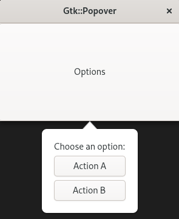

(update:2026/2/18)
Gtk::Popover は、特定のウィジェットに紐づいて表示される軽量なユーザーインターフェースで、メニュー・設定パネル・補助的な入力ユーザーインターフェースを自然に提示するための仕組みです。Gtk::Window のような独立ウィンドウではありませんが、親ウィジェットの位置に従って表示されます。
右クリックメニューやオプション設定、補助フォームなどに適用可能。
どのボタン・どの入力欄に対するユーザーインターフェースなのかが視覚的に明確になります。
ダイアログほど重くなく、ツールチップよりリッチなユーザーインターフェースを作成することができます。
Gtk::Button、Gtk::Label、Gtk::Entry、Gtk::Box などのウィジットを自由に配置することができます。
set_parent() で親を指定すると、クリック位置に自然に表示することができます。
フォーカスが外れたら閉じます。また、外側クリックでも閉じます。
windowの端部に近い場合、上下左右の表示方向を自動で切り替えます。
GTK4 ではフェードイン・アウトが標準で適用されます。
gtk4 の Popover では親ウィジットが必須であるため、親ウィジットをGtk::Popover と結びつけるために set_parent() を必ず実行しなければなりません。 Gtk::Popover では、プログラムの実行時に set_parent() の実行を忘れるとgtk4ライブラリが警告を発生します。
void Gtk::Widget::set_parent( Gtk:Widget& parent )
後で項目を増やすときに拡張性が高くなります。
popup() で Gtk::Popover を開き、popdown() で閉じます。
void Gtk::Popover::popup()
void Gtk::Popover::popdown()
gtk4 の推奨スタイルで、メモリ管理が安全です。
GTK4 では Popover は ウィジェット階層の“子”として扱われるため、set_parent() を使用した場合は、親ウィジェットが破棄される前に Popover を明示的に切り離す必要があります。
サンプルプログラムでは、 Gtk::Window → Gtk::Button → Gtk::Popover という階層になっていて、Gtk::Window が閉じられると Gtk::Button が破棄されます。しかし Gtk::Popover がまだ Gtk::Button の子として残っているとgtk4ライブラリが警告を発生します。
void Gtk::Widget::unparent()
set_position()により、Gtk::Popoverの表示方向を指定することができます。
void Gtk::Popover::set_position( Gtk::PositionType position )
| Gtk::PositionType | |
|---|---|
| 記 号 | 内 容 |
| LEFT | 親ウイジットの左向きに表示 |
| RIGHT | 親ウイジットの右向きに表示 |
| TOP | 親ウイジットの上向きに表示 |
| BOTTOM | 親ウイジットの下向きに表示(デフォルト) |
Gtk::Popover に Gtk::Box の内容を格納し、その後、Gtk::Popover を 親ウイジットである Gtk::Button に結びつけます。
Gtk::Popover を宣言します。
set_parent() を用いて 親ウイジットである Gtk::Button と Gtk::Popover を結びつけます。
Gtk::Box、Gtk::Label、Gtk::Button は、make_managed() を用いて領域を確保し、メモリーの所有権を明確化します。
Gtk::Box を縦書きで領域を確保します。
Gtk::Label を横書きで領域を確保し、表示する内容は、"Choose an option:" とします。
Gtk::Button の領域を確保し、表示する内容は、btn_a は、 "Action A" とし、btn_b は、 "Action B" とします。
Gtk::Box に Gtk::Button を apeend() メソッドで格納します。
Gtk::Button のイベントシグナル(signal_click) が発生した際に、標準出力(std::cout)に "Action clicked" となるメッセージを表示します。
set_child() メソッドを用いて、Gtk::Popover に Gtk::Box をセットします。
Gtk::Popover を開きます。
Gtk::Popover を閉じて、標準出力にメッセージ"Action * triggered"を表示します。
親ウィジェットである Gtk::Box が破棄される前に Popover を明示的に切り離します。
#include <gtkmm.h>
#include <iostream>
class MyWindow : public Gtk::Window {
public:
MyWindow();
~MyWindow();
private:
// signal handler:
void do_up();
void do_A();
void do_B();
// child widget:
Gtk::Button m_button;
// 1.Gtk::Popoverの宣言
Gtk::Popover m_popover;
};
MyWindow::MyWindow()
{
set_title( "Gtk::Popover" );
set_default_size( 300, 200 );
// ボタン
m_button.set_label( "Options" );
set_child( m_button );
// 2.Popover（親を明示）
m_popover.set_parent( m_button );
// 3.Gtk::Popover の内容の定義
// 3.1 Gtk::Box 領域を確保
auto box = Gtk::make_managed<Gtk::Box>( Gtk::Orientation::VERTICAL, 6 );
box->set_margin( 12 );
// 3.2 Gtk::Label の領域を確保
auto label = Gtk::make_managed<Gtk::Label>( "Choose an option:" );
box->append(*label);
// 3.3 Gtk::Button の領域を確保
auto btn_a = Gtk::make_managed<Gtk::Button>( "Action A" );
auto btn_b = Gtk::make_managed<Gtk::Button>( "Action B" );
// 3.4 Gtk::Box に Gtk::Button を格納
box->append( *btn_a );
box->append( *btn_b );
// 3.5 Gtk::Button のイベントシグナルとシグナルハンドラーを接続
// ボタンを押すと Popover を表示
m_button.signal_clicked().connect( sigc::mem_fun( *this, &MyWindow::do_up ));
// Popover 内のボタン動作
btn_a->signal_clicked().connect( sigc::mem_fun( *this, &MyWindow::do_A ));
btn_b->signal_clicked().connect( sigc::mem_fun( *this, &MyWindow::do_B ));
//4.Gtk::Popover に Gtk::Box をセット
m_popover.set_child( *box );
}
MyWindow::~MyWindow()
{
// 7.プログラム終了時に Popover を親から分離
m_popover.unparent();
}
void MyWindow::do_up()
{
// 5.ボタンを押すと Popover を表示
m_popover.popup();
}
void MyWindow::do_A()
{
// 6.Aボタンを押すと Popover を閉じる
m_popover.popdown();
std::cout << "Action A triggered\n";
}
void MyWindow::do_B()
{
// 6.Bボタンを押すと Popover を閉じる
m_popover.popdown();
std::cout << "Action B triggered\n";
}
int main( int argc, char* argv[] )
{
auto app = Gtk::Application::create( "popover.example" );
return app->make_window_and_run<MyWindow>( argc, argv );
}
| Gtk::Popover | |
|---|---|
| Console | Window |
|
$ ./test & $ Action A triggered ( ※ Action A を押した時 ) $ Action B triggered ( ※ Action B を押した時 ) $ |
 |